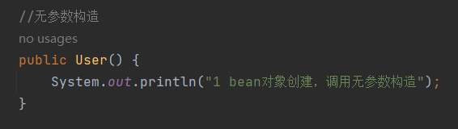
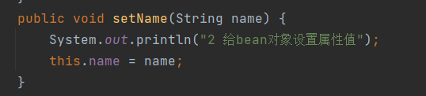
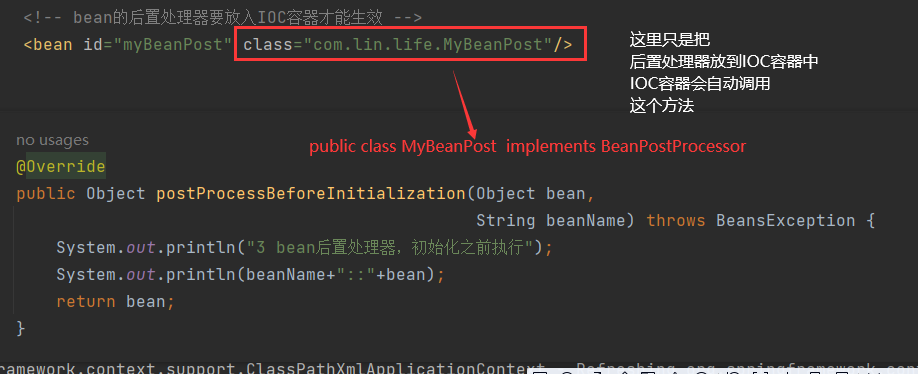
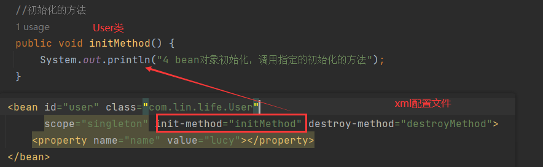
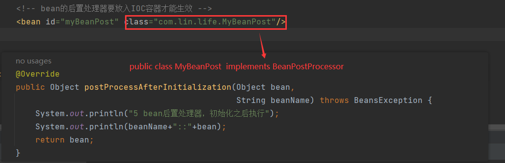
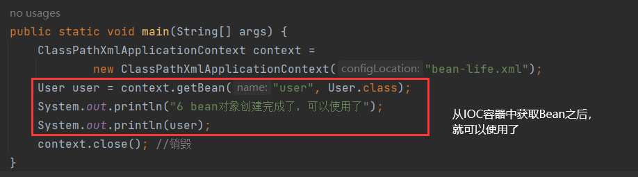
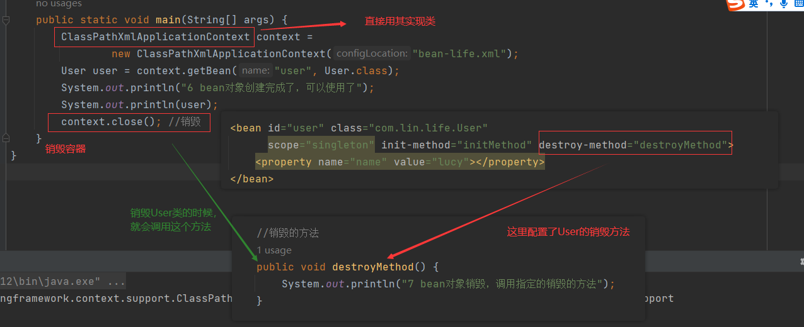
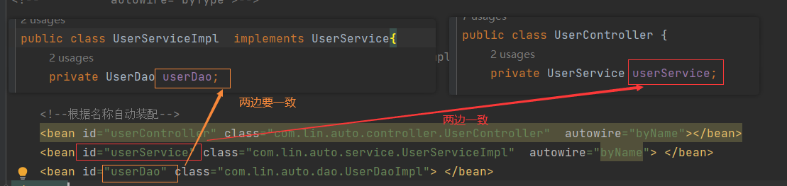

获取bean
先定义一个HelloWorld对象
package com.lin.bean;
public class HelloWorld {
public HelloWorld() {
System.out.println("无参数构造方法执行");
}
public void sayHello(){
System.out.println("helloworld");
}
}
根据id获取
定义Bean的时候
<bean id="helloWorld" class="com.lin.bean.HelloWorld"></bean>
获取Bean的时候
@Test
public void testGetBean1(){
ApplicationContext context = new ClassPathXmlApplicationContext("beans.xml");
HelloWorld helloWorld = (HelloWorld)context.getBean("helloWorld");
}
根据类型获取
定义Bean的时候
<bean id="helloWorld" class="com.lin.bean.HelloWorld"></bean>
获取Bean的时候
@Test
public void testGetBean2(){
ApplicationContext ac = new ClassPathXmlApplicationContext("beans.xml");
HelloWorld bean = ac.getBean(HelloWorld.class);
}
根据id和类型
定义Bean的时候可以定义2个相同类型的Bean
<bean id="helloWorld" class="com.lin.bean.HelloWorld"></bean>
<bean id="helloWorld2" class="com.lin.bean.HelloWorld"></bean>
获取Bean的时候
@Test
public void testGetBean3(){
ApplicationContext ac = new ClassPathXmlApplicationContext("beans.xml");
HelloWorld bean = ac.getBean("helloWorld",HelloWorld.class);
bean.sayHello("1----------");
HelloWorld bean2 = ac.getBean("helloWorld2",HelloWorld.class);
bean.sayHello("2--------------");
}
日志
HelloWorld:无参数构造方法执行
HelloWorld:无参数构造方法执行
1----------
2--------------
根据接口类型获取实现类的对象
接口定义
package com.lin.bean;
public interface UserDao {
void run();
}
实现类定义：
package com.lin.bean;
public class UserDaoOneImpl implements UserDao{
@Override
public void run() {
System.out.println("UserDaoOneImpl:run");
}
}
定义Bean
<bean id="userDao" class="com.lin.bean.UserDaoOneImpl"></bean>
通过类型获取Bean对象（通过id=userDao是一定可以的）
@Test
public void testGetBean4(){
ApplicationContext ac = new ClassPathXmlApplicationContext("beans.xml");
// 通过接口获取实现类的对象
UserDao userDao = ac.getBean(UserDao.class);
// 执行实现类的方法
userDao.run(); // 日志：UserDaoOneImpl:run
}
但是如果容器中有两个UserDao的实现类，那么执行ac.getBean(UserDao.class)会报错
第二个实现类：
public class UserDaoTwoImpl implements UserDao{
@Override
public void run() {
System.out.println("UserDaoTwoImpl:Two");
}
}
定义Bean
<bean id="userDao" class="com.lin.bean.UserDaoOneImpl"></bean>
<bean id="userDao2" class="com.lin.bean.UserDaoTwoImpl"></bean>
如果再次运行上面的测试代码，会报错
org.springframework.beans.factory.NoUniqueBeanDefinitionException: No qualifying bean of type 'com.lin.bean.UserDao' available: expected single matching bean but found 2: userDao,userDao2
结论：可以根据接口获取实现类的对象UserDao userDao = ac.getBean(UserDao.class);，但是有一个前提条件是只有一个实现类
依赖注入
一个学生对象
package com.lin.bean;
public class Student {
private Integer id;
private String name;
private Integer age;
private String sex;
// 省略getter和setter方法等
}
setter注入
定义Bean
<bean id="studentOne" class="com.lin.bean.Student">
<!-- property标签：通过组件类的setXxx()方法给组件对象设置属性 -->
<!-- name属性：指定属性名（这个属性名是getXxx()、setXxx()方法定义的，和成员变量无关） -->
<!-- value属性：指定属性值 -->
<property name="id" value="1001"></property>
<property name="name" value="张三"></property>
<property name="age" value="23"></property>
<property name="sex" value="男"></property>
</bean>
测试
@Test
public void testDIBySet(){
ApplicationContext ac = new ClassPathXmlApplicationContext("beans.xml");
Student studentOne = ac.getBean("studentOne", Student.class);
System.out.println(studentOne); // Student{id=1001, name='张三', age=23, sex='男'}
}
构造器注入
在Student类中添加有参构造
public Student(Integer id, String name, Integer age, String sex) {
this.id = id;
this.name = name;
this.age = age;
this.sex = sex;
}
定义Bean
<bean id="studentTwo" class="com.lin.bean.Student">
<constructor-arg value="1002"></constructor-arg>
<constructor-arg value="李四"></constructor-arg>
<constructor-arg value="33"></constructor-arg>
<constructor-arg value="女"></constructor-arg>
</bean>
注意：
constructor-arg标签还有两个属性可以进一步描述构造器参数：
- index属性：指定参数所在位置的索引（从0开始）
- name属性：指定参数名
测试：
@Test
public void testDIByConstructor(){
ApplicationContext ac = new ClassPathXmlApplicationContext("beans.xml");
Student studentOne = ac.getBean("studentTwo", Student.class);
System.out.println(studentOne);//Student{id=1002, name='李四', age=33, sex='女'}
}
特殊值处理
null值
<bean id="studentOne" class="com.lin.bean.Student">
<property name="id" value="1001"></property>
<!-- <property name="name" value="张三"></property>-->
<property name="name">
<null />
</property>
<property name="age" value="23"></property>
<property name="sex" value="男"></property>
</bean>
注意：
<property name="name" value="null"></property>以上写法，为name所赋的值是字符串null
小于号问题
xml实体
<!-- 小于号在XML文档中用来定义标签的开始，不能随便使用 -->
<!-- 解决方案一：使用XML实体来代替 -->
<property name="expression" value="a < b"/>
CDATA节
<property name="expression">
<!-- 解决方案二：使用CDATA节 -->
<!-- CDATA中的C代表Character，是文本、字符的含义，CDATA就表示纯文本数据 -->
<!-- XML解析器看到CDATA节就知道这里是纯文本，就不会当作XML标签或属性来解析 -->
<!-- 所以CDATA节中写什么符号都随意 -->
<value><![CDATA[a < b]]></value>
</property>
为对象类型属性赋值
有以下两个类
package com.lin.bean;
public class StudentClass {
private Integer classId;
private String className;
}
package com.lin.bean;
public class Student {
private Integer id;
private String name;
private Integer age;
private String sex;
private StudentClass studentClass;
// 省略getter和setter方法等
}
引用外部bean
配置Bean的信息(spring.xml)
<bean id="classOne" class="com.lin.bean.StudentClass">
<property name="classId" value="1111"></property>
<property name="className" value="财源滚滚班"></property>
</bean>
<bean id="studentFour" class="com.lin.bean.Student">
<property name="id" value="1004"></property>
<property name="name" value="赵六"></property>
<property name="age" value="26"></property>
<property name="sex" value="女"></property>
<!-- ref属性：引用IOC容器中某个bean的id，将所对应的bean为属性赋值 -->
<property name="studentClass" ref="classOne"></property>
</bean>
测试
@Test
public void testGetBean5(){
ApplicationContext ac = new ClassPathXmlApplicationContext("spring.xml");
Student studentFour = (Student)ac.getBean("studentFour");
System.out.println(studentFour);
//Student{id=1004, name='赵六', age=26, sex='女',
// studentClass=StudentClass{classId=1111, clazzName='财源滚滚班'}}
}
内部bean
配置Bean信息（spring.xml）
<bean id="studentFour2" class="com.lin.bean.Student">
<property name="id" value="1004"></property>
<property name="name" value="赵六"></property>
<property name="age" value="26"></property>
<property name="sex" value="女"></property>
<property name="studentClass">
<!-- 在一个bean中再声明一个bean就是内部bean -->
<!-- 内部bean只能用于给属性赋值，不能在外部通过IOC容器获取，因此可以省略id属性 -->
<bean id="clazzInner" class="com.lin.bean.StudentClass">
<property name="classId" value="2222"></property>
<property name="className" value="远大前程班"></property>
</bean>
</property>
</bean>
测试
@Test
public void testGetBean6(){
ApplicationContext ac = new ClassPathXmlApplicationContext("spring.xml");
Student studentFour = (Student)ac.getBean("studentFour2");
System.out.println(studentFour);
// Student{id=1004, name='赵六', age=26, sex='女',
// studentClass=StudentClass{classId=2222, clazzName='远大前程班'}}
}
级联属性赋值
配置Bean信息（spring.xml）
<bean id="classOne" class="com.lin.bean.StudentClass">
<property name="classId" value="1111"></property>
<property name="className" value="财源滚滚班"></property>
</bean>
<bean id="studentFour3" class="com.lin.bean.Student">
<property name="id" value="1004"></property>
<property name="name" value="赵六"></property>
<property name="age" value="26"></property>
<property name="sex" value="女"></property>
<!-- 这个地方就是外部注入 -->
<property name="studentClass" ref="classOne"></property>
<!-- 通过级联属性赋值修改Bean的值 -->
<property name="studentClass.classId" value="3333"></property>
<property name="studentClass.className" value="最强王者班"></property>
</bean>
测试
@Test
public void testGetBean7(){
ApplicationContext ac = new ClassPathXmlApplicationContext("spring.xml");
Student studentFour = (Student)ac.getBean("studentFour3");
System.out.println(studentFour);
// Student{id=1004, name='赵六', age=26, sex='女',
// studentClass=StudentClass{classId=3333, clazzName='最强王者班'}}
}
为数组类型属性赋值
修改Student类
public class Student {
private Integer id;
private String name;
private Integer age;
private String sex;
private StudentClass studentClass;
private String[] hobbies;
}
配置Bean信息（spring.xml）
<bean id="classOne" class="com.lin.bean.StudentClass">
<property name="classId" value="1111"></property>
<property name="className" value="财源滚滚班"></property>
</bean>
<bean id="student4" class="com.lin.bean.Student">
<property name="id" value="1004"></property>
<property name="name" value="赵六"></property>
<property name="age" value="26"></property>
<property name="sex" value="女"></property>
<property name="studentClass" ref="classOne"></property>
<property name="hobbies">
<array>
<value>抽烟</value>
<value>喝酒</value>
<value>烫头</value>
</array>
</property>
</bean>
测试
@Test
public void testGetBean7(){
ApplicationContext ac = new ClassPathXmlApplicationContext("spring.xml");
Student studentFour = (Student)ac.getBean("studentFour3");
System.out.println(studentFour);
//Student{id=1004, name='赵六', age=26, sex='女',
// studentClass=StudentClass{classId=3333, clazzName='最强王者班'},
// hobbies=[抽烟, 喝酒, 烫头]}
}
为集合类型属性赋值
为List/Set集合类型属性赋值
数据结构
public class Dept {
//一个部门有很多员工
private List<Emp> empList;
private String dname;
}
public class Emp {
//对象类型属性：员工属于某个部门
private Dept dept;
//员工名称
private String ename;
//员工年龄
private Integer age;
//爱好
private String[] loves;
}
配置Bean信息（bean-dilist.xml）
若为Set集合类型属性赋值，只需要将其中的list标签改为set标签即可
<bean id="empone" class="com.lin.ditest.Emp">
<property name="ename" value="lucy"></property>
<property name="age" value="20"></property>
</bean>
<bean id="emptwo" class="com.lin.ditest.Emp">
<property name="ename" value="mary"></property>
<property name="age" value="30"></property>
</bean>
<bean id="dept" class="com.lin.ditest.Dept">
<property name="dname" value="技术部"></property>
<property name="empList">
<list>
<ref bean="empone"></ref>
<ref bean="emptwo"></ref>
</list>
</property>
</bean>
测试
public static void main(String[] args) {
ApplicationContext context =
new ClassPathXmlApplicationContext("bean-dilist.xml");
//员工对象
Dept dept = context.getBean("dept", Dept.class);
System.out.println(dept);
//Dept{empList=[
// Emp{dept=null, ename='lucy', age=20, loves=null},
// Emp{dept=null, ename='mary', age=30, loves=null}],
// dname='技术部'}
}
为Map集合类型属性赋值
数据结构
public class Student {
private List<Lesson> lessonList;
private Map<String,Teacher> teacherMap;
private String sid;
private String sname;
}
public class Lesson {
private String lessonName;
}
public class Teacher {
private String teacherId;
private String teacherName;
}
配置Bean信息（bean-dimap.xml）
<bean id="teacherone" class="com.lin.dimap.Teacher">
<!--注入普通类型属性-->
<property name="teacherId" value="100"></property>
<property name="teacherName" value="西门讲师"></property>
</bean>
<bean id="teachertwo" class="com.lin.dimap.Teacher">
<!--注入普通类型属性-->
<property name="teacherId" value="200"></property>
<property name="teacherName" value="上官讲师"></property>
</bean>
<bean id="lessonone" class="com.lin.dimap.Lesson">
<property name="lessonName" value="java开发"></property>
</bean>
<bean id="lessontwo" class="com.lin.dimap.Lesson">
<property name="lessonName" value="前端开发"></property>
</bean>
<bean id="student" class="com.lin.dimap.Student">
<!--注入普通类型属性-->
<property name="sid" value="2000"></property>
<property name="sname" value="张三"></property>
<!-- list类型的注入 -->
<property name="lessonList">
<list>
<ref bean="lessonone"/>
<ref bean="lessontwo"/>
</list>
</property>
<!--在学生bean注入map集合类型属性-->
<property name="teacherMap">
<map>
<entry>
<key>
<value>10010</value>
</key>
<ref bean="teacherone"></ref>
</entry>
<entry>
<key>
<value>10086</value>
</key>
<ref bean="teachertwo"></ref>
</entry>
</map>
</property>
</bean>
测试
@Test
public void testStu() {
ApplicationContext context =
new ClassPathXmlApplicationContext("bean-dimap.xml");
Student student = context.getBean("student", Student.class);
System.out.println(student);
//Student{
// lessonList=[
// Lesson{lessonName='java开发'},
// Lesson{lessonName='前端开发'}],
// teacherMap={
// 10010=Teacher{teacherId='100', teacherName='西门讲师'},
// 10086=Teacher{teacherId='200', teacherName='上官讲师'}},
// sid='2000',
// sname='张三'}
}
另一种方式注入集合
配置Bean信息（bean-dimap.xml）
<?xml version="1.0" encoding="UTF-8"?>
<beans xmlns="http://www.springframework.org/schema/beans"
xmlns:xsi="http://www.w3.org/2001/XMLSchema-instance"
xmlns:util="http://www.springframework.org/schema/util"
xsi:schemaLocation="http://www.springframework.org/schema/util
http://www.springframework.org/schema/util/spring-util.xsd
http://www.springframework.org/schema/beans
http://www.springframework.org/schema/beans/spring-beans.xsd">
<!--
1 创建三个对象
2 注入普通类型属性
3 使用util:类型 定义
4 在学生bean引入util:类型定义bean，完成list、map类型属性注入
-->
<bean id="student" class="com.lin.dimap.Student">
<property name="sid" value="10000"></property>
<property name="sname" value="lucy"></property>
<!--注入list、map类型属性-->
<property name="lessonList" ref="lessonListRef"></property>
<property name="teacherMap" ref="teacherMapRef"></property>
</bean>
<!--类似于引入对象的外部引入-->
<util:list id="lessonListRef">
<ref bean="lessonone"></ref>
<ref bean="lessontwo"></ref>
</util:list>
<!--类似于引入对象的外部引入-->
<util:map id="teacherMapRef">
<entry>
<key>
<value>10010</value>
</key>
<ref bean="teacherone"></ref>
</entry>
<entry>
<key>
<value>10086</value>
</key>
<ref bean="teachertwo"></ref>
</entry>
</util:map>
<bean id="lessonone" class="com.lin.dimap.Lesson">
<property name="lessonName" value="java开发"></property>
</bean>
<bean id="lessontwo" class="com.lin.dimap.Lesson">
<property name="lessonName" value="前端开发"></property>
</bean>
<bean id="teacherone" class="com.lin.dimap.Teacher">
<property name="teacherId" value="100"></property>
<property name="teacherName" value="西门讲师"></property>
</bean>
<bean id="teachertwo" class="com.lin.dimap.Teacher">
<property name="teacherId" value="200"></property>
<property name="teacherName" value="欧阳讲师"></property>
</bean>
</beans>
使用util:list、util:map标签必须引入相应的命名空间
<beans xmlns="http://www.springframework.org/schema/beans" xmlns:xsi="http://www.w3.org/2001/XMLSchema-instance" xmlns:util="http://www.springframework.org/schema/util" xsi:schemaLocation="http://www.springframework.org/schema/util http://www.springframework.org/schema/util/spring-util.xsd http://www.springframework.org/schema/beans http://www.springframework.org/schema/beans/spring-beans.xsd">相比之前多长了以下内容：
<beans xmlns:util="http://www.springframework.org/schema/util" xsi:schemaLocation="http://www.springframework.org/schema/util http://www.springframework.org/schema/util/spring-util.xsd >
测试
@Test
public void testStu2() {
ApplicationContext context =
new ClassPathXmlApplicationContext("bean-diref.xml");
Student student = context.getBean("student", Student.class);
System.out.println(student);
// Student{
// lessonList=[
// Lesson{lessonName='java开发'},
// Lesson{lessonName='前端开发'}],
// teacherMap={
// 10010=Teacher{teacherId='100', teacherName='西门讲师'},
// 10086=Teacher{teacherId='200', teacherName='欧阳讲师'}},
// sid='10000',
// sname='lucy'}
}
p命名空间
配置Bean信息（bean-p.xml）
<?xml version="1.0" encoding="UTF-8"?>
<beans xmlns="http://www.springframework.org/schema/beans"
xmlns:xsi="http://www.w3.org/2001/XMLSchema-instance"
xmlns:util="http://www.springframework.org/schema/util"
xmlns:p="http://www.springframework.org/schema/p"
xsi:schemaLocation="http://www.springframework.org/schema/util
http://www.springframework.org/schema/util/spring-util.xsd
http://www.springframework.org/schema/beans
http://www.springframework.org/schema/beans/spring-beans.xsd">
<!--p命名空间注入-->
<bean id="studentp" class="com.lin.dimap.Student"
p:sid="100" p:sname="mary" p:lessonList-ref="lessonListRef" p:teacherMap-ref="teacherMapRef">
</bean>
<!--类似于引入对象的外部引入-->
<util:list id="lessonListRef">
<ref bean="lessonone"></ref>
<ref bean="lessontwo"></ref>
</util:list>
<!--类似于引入对象的外部引入-->
<util:map id="teacherMapRef">
<entry>
<key>
<value>10010</value>
</key>
<ref bean="teacherone"></ref>
</entry>
<entry>
<key>
<value>10086</value>
</key>
<ref bean="teachertwo"></ref>
</entry>
</util:map>
<bean id="lessonone" class="com.lin.dimap.Lesson">
<property name="lessonName" value="java开发"></property>
</bean>
<bean id="lessontwo" class="com.lin.dimap.Lesson">
<property name="lessonName" value="前端开发"></property>
</bean>
<bean id="teacherone" class="com.lin.dimap.Teacher">
<property name="teacherId" value="100"></property>
<property name="teacherName" value="西门讲师"></property>
</bean>
<bean id="teachertwo" class="com.lin.dimap.Teacher">
<property name="teacherId" value="200"></property>
<property name="teacherName" value="欧阳讲师"></property>
</bean>
</beans>
相比之前多了如下命名空间：
< beans xmlns:p="http://www.springframework.org/schema/p">
测试
@Test
public void testStu3() {
ApplicationContext context =
new ClassPathXmlApplicationContext("bean-p.xml");
Student student = context.getBean("studentp", Student.class);
System.out.println(student);
// Student{
// lessonList=[
// Lesson{lessonName='java开发'},
// Lesson{lessonName='前端开发'}],
// teacherMap={
// 10010=Teacher{teacherId='100', teacherName='西门讲师'},
// 10086=Teacher{teacherId='200', teacherName='欧阳讲师'}},
// sid='100',
// sname='mary'}
}
引入外部属性文件
加入依赖
<!-- MySQL驱动 -->
<dependency>
<groupId>mysql</groupId>
<artifactId>mysql-connector-java</artifactId>
<version>8.0.30</version>
</dependency>
<!-- 数据源 -->
<dependency>
<groupId>com.alibaba</groupId>
<artifactId>druid</artifactId>
<version>1.2.15</version>
</dependency>
加入外部文件

jdbc.user=root
jdbc.password=root
jdbc.url=jdbc:mysql://localhost:3306/ssm?serverTimezone=UTC
jdbc.driver=com.mysql.cj.jdbc.Driver
配置xml，引入外部属性文件
<?xml version="1.0" encoding="UTF-8"?>
<beans xmlns="http://www.springframework.org/schema/beans"
xmlns:xsi="http://www.w3.org/2001/XMLSchema-instance"
xmlns:context="http://www.springframework.org/schema/context"
xsi:schemaLocation="http://www.springframework.org/schema/context
http://www.springframework.org/schema/context/spring-context.xsd
http://www.springframework.org/schema/beans
http://www.springframework.org/schema/beans/spring-beans.xsd">
<!--引入外部属性文件-->
<context:property-placeholder location="classpath:jdbc.properties"></context:property-placeholder>
<!--完成数据库信息注入-->
<bean id="druidDataSource" class="com.alibaba.druid.pool.DruidDataSource">
<property name="url" value="${jdbc.url}"></property>
<property name="username" value="${jdbc.user}"></property>
<property name="password" value="${jdbc.password}"></property>
<property name="driverClassName" value="${jdbc.driver}"></property>
</bean>
</beans>
需要引入context 名称空间，会多长以下内容
<beans xmlns:context="http://www.springframework.org/schema/context" xsi:schemaLocation="http://www.springframework.org/schema/context http://www.springframework.org/schema/context/spring-context.xsd">
classpath:jdbc.properties：因为我们直接放在resources目录下
jdbc.url的值对应dbc.properties里面的jdbc.url。最终实现以下功能DruidDataSource dataSource = new DruidDataSource(); dataSource.setUrl("jdbc:mysql://localhost:3306/spring?serverTimezone=UTC"); dataSource.setUsername("root"); dataSource.setPassword("root"); dataSource.setDriverClassName("com.mysql.cj.jdbc.Driver");
测试
@Test
public void demo2() {
ApplicationContext context =
new ClassPathXmlApplicationContext("bean-jdbc.xml");
DruidDataSource dataSource = context.getBean(DruidDataSource.class);
System.out.println(dataSource.getUrl());
}
配置Bean的作用域
在Spring中可以通过配置bean标签的scope属性来指定bean的作用域范围，各取值含义参加下表：
| 取值 | 含义 | 创建对象的时机 |
|---|---|---|
| singleton（默认） | 在IOC容器中，这个bean的对象始终为单实例 | IOC容器初始化时 |
| prototype | 这个bean在IOC容器中有多个实例 | 获取bean时 |
如果是在WebApplicationContext环境下还会有另外几个作用域（但不常用）：
| 取值 | 含义 |
|---|---|
| request | 在一个请求范围内有效 |
| session | 在一个会话范围内有效 |
配置数据
package com.lin.scope;
public class Orders {
}
配置Bean信息（bean-scope.xml）
<!-- scope属性：取值singleton（默认值），bean在IOC容器中只有一个实例，IOC容器初始化时创建对象 -->
<!-- scope属性：取值prototype，bean在IOC容器中可以有多个实例，getBean()时创建对象 -->
<bean id="orders" class="com.lin.scope.Orders" scope="prototype"></bean>
测试
public class TestOrders {
public static void main(String[] args) {
ApplicationContext context =
new ClassPathXmlApplicationContext("bean-scope.xml");
Orders orders = context.getBean("orders", Orders.class);
System.out.println(orders);//com.lin.scope.Orders@7b5a12ae
Orders orders1 = context.getBean("orders", Orders.class);
System.out.println(orders1);// com.lin.scope.Orders@5553d0f5
System.out.println(orders==orders1); //false
}
}
bean生命周期：指定初始化和销毁的方法
具体的生命周期过程
bean对象创建（调用无参构造器）
给bean对象设置属性（调用set方法）
bean的后置处理器（初始化之前，需要配置后置处理器）
bean对象初始化（调用指定初始化方法）
bean的后置处理器（初始化之后，需要配置后置处理器）
bean对象创建完成，可以使用了
bean对象销毁（调用指定的销毁方法）
IOC容器关闭
演示
创建User类
public class User {
//无参数构造
public User() {
System.out.println("1 bean对象创建，调用无参数构造");
}
private String name;
public String getName() {
return name;
}
public void setName(String name) {
System.out.println("2 给bean对象设置属性值");
this.name = name;
}
//初始化的方法
public void initMethod() {
System.out.println("4 bean对象初始化，调用指定的初始化的方法");
}
//销毁的方法
public void destroyMethod() {
System.out.println("7 bean对象销毁，调用指定的销毁的方法");
}
@Override
public String toString() {
return "User{" +
"name='" + name + '\'' +
'}';
}
}
配置Bean信息（bean-scope.xml）
<bean id="user" class="com.lin.life.User"
scope="singleton" init-method="initMethod" destroy-method="destroyMethod">
<property name="name" value="lucy"></property>
</bean>
<!-- bean的后置处理器要放入IOC容器才能生效，而且是整个IOC容器都生效 -->
<bean id="myBeanPost" class="com.lin.life.MyBeanPost"/>
定义后置处理器
public class MyBeanPost implements BeanPostProcessor {
@Override
public Object postProcessBeforeInitialization(Object bean,
String beanName) throws BeansException {
System.out.println("3 bean后置处理器，初始化之前执行");
System.out.println(beanName+"::"+bean);
return bean;
}
@Override
public Object postProcessAfterInitialization(Object bean,
String beanName) throws BeansException {
System.out.println("5 bean后置处理器，初始化之后执行");
System.out.println(beanName+"::"+bean);
return bean;
}
}
测试：
public class TestUser {
public static void main(String[] args) {
ClassPathXmlApplicationContext context =
new ClassPathXmlApplicationContext("bean-life.xml");
User user = context.getBean("user", User.class);
System.out.println("6 bean对象创建完成了，可以使用了");
System.out.println(user);
context.close(); //销毁
}
}
日志：
1 bean对象创建，调用无参数构造
2 给bean对象设置属性值
3 bean后置处理器，初始化之前执行
user::User{name='lucy'}
4 bean对象初始化，调用指定的初始化的方法
5 bean后置处理器，初始化之后执行
user::User{name='lucy'}
6 bean对象创建完成了，可以使用了
User{name='lucy'}
2024-09-27 18:02:57 566 [main] DEBUG org.springframework.context.support.ClassPathXmlApplicationContext - Closing org.springframework.context.support.ClassPathXmlApplicationContext@42b3b079, started on Fri Sep 27 18:02:57 CST 2024
7 bean对象销毁，调用指定的销毁的方法
使用FactoryBean创建Bean
FactoryBean是Spring提供的一种整合第三方框架的常用机制。和普通的bean不同，配置一个FactoryBean类型的bean，在获取bean的时候得到的并不是class属性中配置的这个类的对象，而是getObject()方法的返回值。通过这种机制，Spring可以帮我们把复杂组件创建的详细过程和繁琐细节都屏蔽起来，只把最简洁的使用界面展示给我们。
将来我们整合Mybatis时，Spring就是通过FactoryBean机制来帮我们创建SqlSessionFactory对象的。
创建一个User类
public class User {
private String name;
}
创建MyFactoryBean类，实现FactoryBean
public class MyFactoryBean implements FactoryBean<User> {
@Override
public User getObject() throws Exception {
return new User("Jerry");
}
@Override
public Class<?> getObjectType() {
return User.class;
}
}
配置Bean信息（bean-scope.xml）
<bean id="user" class="com.lin.factorybean.MyFactoryBean"></bean>
测试：发现我们根据id="user"获取的对象不是MyFactoryBean，而是User
public class TestUser {
public static void main(String[] args) {
ApplicationContext context =
new ClassPathXmlApplicationContext("bean-factorybean.xml");
User user = (User) context.getBean("user");
System.out.println(user); // User{name='Jerry'}
}
}
基于xml自动装配
准备数据
创建类UserController
package com.lin.auto.controller;
import com.lin.auto.service.UserService;
public class UserController {
private UserService userService;
// 自动装配也是调用set方法，这个不能少
public void setUserService(UserService userService) {
this.userService = userService;
}
public void addUser() {
System.out.println("controller方法执行了...");
//调用service的方法
userService.addUserService();
// 在没有自动装配之前，如果我们想调用UserService里面的方法，就只有通过new创建
// UserService userService = new UserServiceImpl();
// userService.addUserService();
}
}
创建接口UserService
package com.lin.auto.service;
public interface UserService {
public void addUserService();
}
创建类UserServiceImpl实现接口UserService
package com.lin.auto.service;
import com.lin.auto.dao.UserDao;
public class UserServiceImpl implements UserService{
private UserDao userDao;
public void setUserDao(UserDao userDao) {
this.userDao = userDao;
}
@Override
public void addUserService() {
System.out.println("userService方法执行了...");
userDao.addUserDao();
}
}
创建接口UserDao
package com.lin.auto.dao;
public interface UserDao {
public void addUserDao();
}
创建类UserDaoImpl实现接口UserDao
package com.lin.auto.dao;
public class UserDaoImpl implements UserDao{
@Override
public void addUserDao() {
System.out.println("userDao方法执行了...");
}
}
配置
byType
<!--根据类型自动装配-->
<bean id="userController" class="com.lin.auto.controller.UserController" autowire="byType"></bean>
<bean id="userService" class="com.lin.auto.service.UserServiceImpl" autowire="byType"> </bean>
<bean id="userDao" class="com.lin.auto.dao.UserDaoImpl"></bean>
使用bean标签的autowire属性设置自动装配效果
byType：根据类型匹配IOC容器中的某个兼容类型的bean，为属性自动赋值
若在IOC中，没有任何一个兼容类型的bean能够为属性赋值，则该属性不装配，即值为默认值null
若在IOC中，有多个兼容类型的bean能够为属性赋值，则抛出异常NoUniqueBeanDefinitionException
byName
<!--根据名称自动装配-->
<bean id="userController" class="com.lin.auto.controller.UserController" autowire="byName"></bean>
<bean id="userService" class="com.lin.auto.service.UserServiceImpl" autowire="byName"> </bean>
<bean id="userDao" class="com.lin.auto.dao.UserDaoImpl"> </bean>
byName：IOC容器将Bean的id和属性的名称一起匹配，如图：
如果名字不一致，如
<bean id="userController" class="com.lin.auto.controller.UserController" autowire="byName"></bean> <bean id="userService" class="com.lin.auto.service.UserServiceImpl" autowire="byName"> </bean> <bean id="userDaoImpl" class="com.lin.auto.dao.UserDaoImpl"> </bean>回报如下错误：java.lang.NullPointerException: Cannot invoke “com.lin.auto.dao.UserDao.addUserDao()” because “this.userDao” is null
但是如果是这么配置，就不会报错，因为IOC可以找到
userDao,只是多了一个Bean(userDaoImpl)<bean id="userController" class="com.lin.auto.controller.UserController" autowire="byName"></bean> <bean id="userService" class="com.lin.auto.service.UserServiceImpl" autowire="byName"> </bean> <bean id="userDao" class="com.lin.auto.dao.UserDaoImpl"> </bean> <bean id="userDaoImpl" class="com.lin.auto.dao.UserDaoImpl"> </bean>
转载请注明来源，欢迎对文章中的引用来源进行考证，欢迎指出任何有错误或不够清晰的表达。可以在下面评论区评论，也可以邮件至 1909773034@qq.com